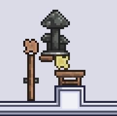
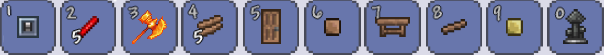
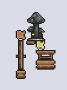
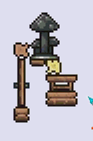
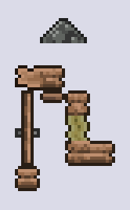
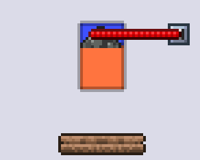
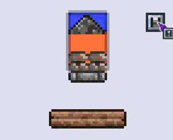

| Status | Works |
|---|---|
| Platform | Any |
| Tags |
The basics of transmutation is using broken furniture to move any other piece of furniture or tile on its sprite sheet, including in the negative values this lets us:
Note that transmuting certain things can lead to crashes, we'll adress those later.
To begin, you must be in multiplayer, host and play works fine.
You will need these items, or if you're pre-skeletron, natrually generated wires.

Build this setup as shown, the tile above the door has to be dirt or a tile with similar properties.

Hammer the right tile below the work bench and place the wood as shown, you must do this quickly though, if a block updates in your world the mushroom statue will break.

If all went well you can now reload in single player, you should see your mushroom cap.

You can now place your wire and do a bit of cleanup, note that it is not necessary to mark the tiles like this, but it will be helpful for future projects, so I highly reccomend it. Also, you cannot pace a tile touching the mushroom cap, that will break it.

Congrats, you have completed the first stage of transmutation!
